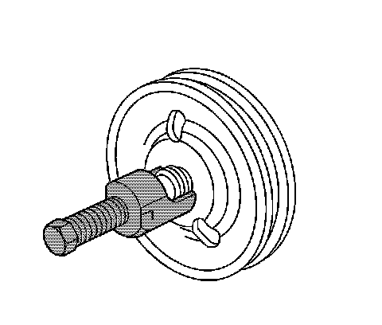
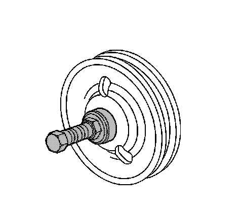
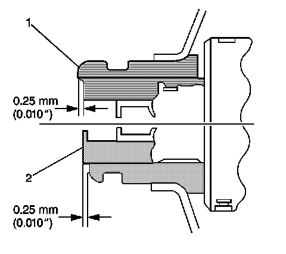

Power Steering Pump Pulley Replacement
Power Steering Pulley Replacement
Tools Required
^ J 25033-C Power Steering Pump Pulley Installer
^ J 25034-C Power Steering Pump Pulley Remover
Removal Procedure
1. Remove the upper fan shroud, if equipped.
2. Remove the accessory drive belt.

3. Remove the power steering pump pulley using the J 25034-C.
Installation Procedure

1. Place the power steering pump pulley on the end of the power steering pump shaft.
2. Install the power steering pump pulley using J 25033-C.

3. Ensure that the power steering pump pulley (1) is flush against the power steering pump shaft (2), with an allowable variance of 0.25 mm (0.010 in).
4. Install the accessory drive belt.
5. Install the upper fan shroud, if equipped.